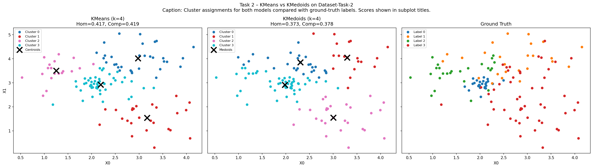

Task 2 — KMeans vs KMedoids
You can use dataset-task-2.csv or generate your own using make_blobs. Compare KMeans and KMedoids using homogeneity and completeness scores:
- Train the models.
- Make scatterplots of their performance. Also scatterplot the true labels for visual comparison.
- Your plots.
- If you made a dataset of your own, how you made it and why.
- Which value of k you used for each model.
- Which model performed better? Do you have any idea why?
- Describe for both models a situation where it would be a better choice than the other.
Dataset
We used the provided dataset-task-2.csv (125 points, 2 features X0/X1, 4 ground-truth labels 0–3). Label distribution: three classes with 25 points each and one with 50 points — slightly imbalanced.
Code
url = 'https://raw.githubusercontent.com/MLCourse-LU/Datasets/main/dataset-task-2.csv' df = pd.read_csv(url, header=0) X = df.iloc[:, :-1].values # features (X0, X1) y = df.iloc[:, -1].values # ground-truth labels (0–3) k = 4 km_t2 = KMeans(n_clusters=k, random_state=42, n_init=10) kmed_t2 = KMedoids(n_clusters=k, random_state=42) km_t2.fit(X); kmed_t2.fit(X) km_hom = homogeneity_score(y, km_t2.labels_) # 0.417 km_comp = completeness_score(y, km_t2.labels_) # 0.419 kmed_hom = homogeneity_score(y, kmed_t2.labels_) # 0.373 kmed_comp= completeness_score(y, kmed_t2.labels_)# 0.378
How homogeneity & completeness work
Homogeneity measures whether each predicted cluster contains only members of a single ground-truth class (1 = perfectly homogeneous, 0 = totally mixed). Completeness measures whether all members of a ground-truth class are placed in the same predicted cluster (1 = fully captured). Together they form a picture analogous to precision/recall.
Results plot

Scores
| Model | Homogeneity | Completeness |
|---|---|---|
| KMeans | 0.417 | 0.419 |
| KMedoids | 0.373 | 0.378 |
k = 4 was used for both models (matching the 4 ground-truth labels).
Which performed better and why
KMeans performed slightly better. KMeans places its centroid at the arithmetic mean of assigned points — an unconstrained position that adapts to each cluster's geometry. KMedoids constrains its centroid to an actual data point; in regions where clusters overlap, the chosen medoid may be slightly off-centre, slightly mis-aligning the Voronoi boundary and causing some points to be assigned incorrectly.
The class imbalance (one class has 50 vs 25 points) also affects KMedoids more — larger clusters pull medoids toward their densest sub-region, distorting smaller cluster boundaries.
Both scores (~0.42) are only moderate, indicating the 4 classes are not perfectly linearly separable — neither algorithm fully recovers the ground truth.
When each algorithm is the better choice
- KMeans is better when clusters are roughly spherical, similarly sized, and free of outliers — it converges faster and its unconstrained centroid captures the true geometric centre of each Gaussian blob.
- KMedoids is better when data contains significant outliers (the medoid is always an interior point, so it isn't pulled away), when the distance metric is non-Euclidean (e.g. Hamming distance on categorical data), or when interpretability matters — the medoid is a real data point and can be shown to stakeholders as a representative example.